Class 8-Chapter 6: Exploring Pressure and Its Effects – Questions and Answers
1. Choose the Correct Statement
Question 1 (i). Look at Fig. 6.21 carefully. Vessel R is filled with water. When pouring of water is stopped, the level of water will be:
- The highest in vessel P.
- The highest in vessel Q.
- The highest in vessel R.
- Equal in all three vessels.
Answer: Correct option (d) – Equal in all three vessels.
Explanation: Vessels P, Q and R are connected to each other. When the same liquid is poured into connected vessels, the liquid reaches the same height in all vessels.
This principle is called the principle of communicating vessels.

Question 1 (ii). A rubber sucker (M) is pressed on a flat smooth surface and an identical sucker (N) is pressed on a rough surface:
- Both M and N will stick to their surfaces.
- Both M and N will not stick to their surfaces.
- M will stick but N will not stick.
- M will not stick but N will stick.
Answer: Correct option (c) – M will stick but N will not stick.
Explanation:
- Sucker M sticks to the smooth surface because air is pushed out and a pressure difference holds it in place.
- Sucker N does not stick properly to the rough surface because air can enter through the gaps.
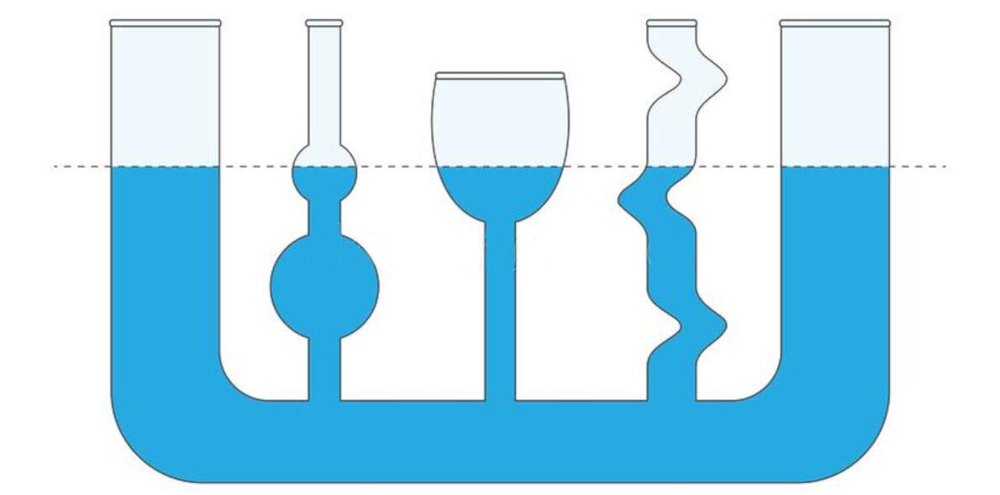
Question 1 (iii). A water tank is placed on the roof of a building at a height H. To get water with more pressure on the ground floor, one has to:
- Increase the height H at which the tank is placed.
- Decrease the height H at which the tank is placed.
- Replace the tank with another tank of the same height that can hold more water.
- Replace the tank with another tank of the same height that can hold less water.
Answer: Correct option (a) – Increase the height H at which the tank is placed.
Explanation: Water pressure increases with the height of the water column. Therefore, if the tank is placed at a greater height, water will reach the ground floor with more pressure.
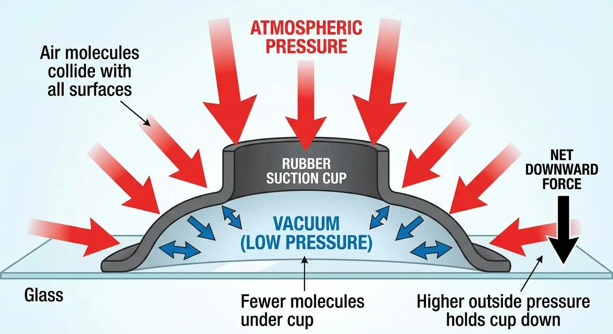
Question 1 (iv). Two vessels, A and B, contain water up to the same level. P_A and P_B are the pressures at the bottom of the vessels. F_A and F_B are the forces exerted by the water at the bottom of vessels A and B. Choose the correct option.
- P_A = P_B, F_A = F_B
- P_A = P_B, F_A < F_B
- P_A < P_B, F_A = F_B
- P_A > P_B, F_A > F_B
Answer: Correct option (b) – P_A = P_B, F_A < F_B.
Explanation:
- Both vessels contain water up to the same height.
- Therefore, the pressure at their bottoms is equal.
- Vessel B has a larger bottom area than vessel A.
- Force = Pressure × Area.
Therefore, the force exerted by water at the bottom of vessel B is greater.
Formula:
Pressure = Force / Area
Final Result: P_A = P_B and F_A < F_B.
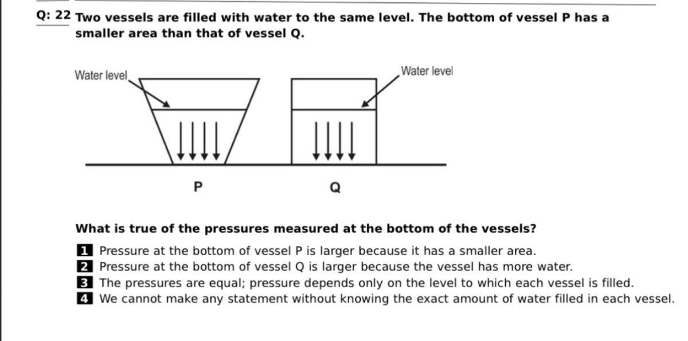
2. True or False
Question 2. State whether the following statements are True [T] or False [F].
(i) Air flows from a region of higher pressure to a region of lower pressure.
Answer: True [T].
Explanation: Air naturally moves from a region of higher pressure to a region of lower pressure.
(ii) Liquids exert pressure only at the bottom of a container.
Answer: False [F].
Explanation: Liquids exert pressure in all directions, including on the bottom and the sides of a container.
(iii) Weather is stormy at the eye of a cyclone.
Answer: False [F].
Explanation: The eye of a cyclone is generally calm, with light winds and relatively clear weather. The strongest winds and heavy rainfall occur around the eye.
(iv) During a thunderstorm, it is safer to be in a car.
Answer: True [T].
Explanation: A fully enclosed metal-bodied car provides protection during lightning. The electric charge travels along the outside of the car body. Keep the windows closed and avoid touching metal parts.

3. Pressure on Loose Sand
Question 3. Fig. 6.23(a) shows a boy lying horizontally, and Fig. 6.23(b) shows the boy standing vertically on a loose sand bed. In which case does the boy sink more in sand? Give reasons.
Answer: The boy sinks more when he is standing vertically.
Explanation:
- When the boy stands, his body weight acts on a smaller area of his feet.
- When he lies down, his weight is spread over a larger area.
- Pressure increases when the area decreases.
We know that:
Pressure = Force / Area
Therefore, the boy exerts more pressure on the sand while standing and sinks deeper.
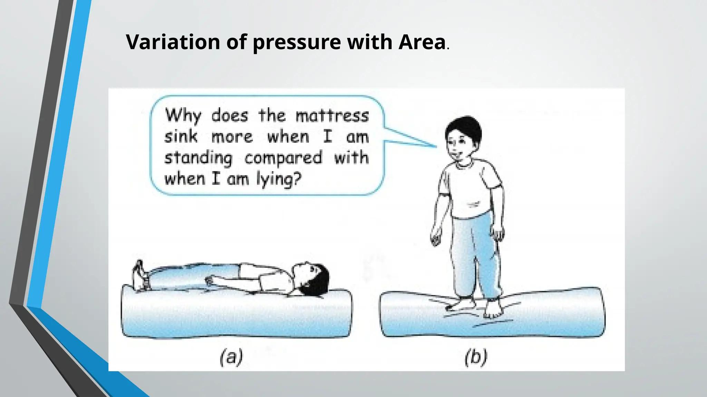
4. Pressure Exerted by an Elephant
Question 4. An elephant stands on four feet. If the area covered by one foot is 0.25 m², calculate the pressure exerted by the elephant on the ground if its weight is 20000 N.
Answer:
Given:
- Weight of elephant = 20,000 N
- Area of one foot = 0.25 m²
- Number of feet = 4
Step 1: Calculate the total area.
Total Area = 4 × 0.25
Total Area = 1 m²
Step 2: Calculate pressure.
Pressure = Force / Area
Pressure = 20000 / 1
Pressure = 20000 Pa
Final Answer: The pressure exerted by the elephant on the ground is 20,000 Pascal (Pa).

5. Pressure Exerted by Two Boats
Question 5. There are two boats, A and B. Boat A has a base area of 7 m², and 5 persons are seated in it. Boat B has a base area of 3.5 m², and 3 persons are seated in it. If each person has a weight of 700 N, find out which boat will experience more pressure on its base and by how much.
Answer:
Given:
- Weight of each person = 700 N
- Base area of boat A = 7 m²
- Base area of boat B = 3.5 m²
- Number of persons in boat A = 5
- Number of persons in boat B = 3
Step 1: Calculate the force on boat A.
F_A = 5 × 700
F_A = 3500 N
Pressure on boat A:
P_A = 3500 / 7
P_A = 500 Pa
Step 2: Calculate the force on boat B.
F_B = 3 × 700
F_B = 2100 N
Pressure on boat B:
P_B = 2100 / 3.5
P_B = 600 Pa
Step 3: Calculate the difference.
Difference = 600 - 500
Difference = 100 Pa
Final Answer: Boat B experiences more pressure than boat A by 100 Pa.

6. Lightning and Electrical Conductivity
Question 6. Would lightning occur if air and clouds were good conductors of electricity? Give reasons for your answer.
Answer: No, lightning would generally not occur in the same way if air and clouds were good conductors of electricity.
Explanation:
- During thunderstorms, electric charges build up in clouds.
- Normally, air is a poor conductor of electricity.
- Therefore, electric charges can accumulate and create a large potential difference.
- When this difference becomes very large, an electric discharge takes place. This is called lightning.
If air and clouds were good conductors, charges would flow more easily and would not build up to such a large potential difference.
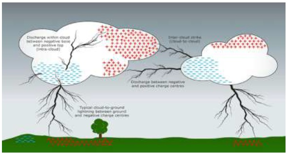
7. Water Pressure and Balloons
Question 7. What will happen to the two identical balloons A and B as shown in Fig. 6.24 when water is filled into the bottle up to a certain height? Will both the balloons bulge? If yes, will they bulge equally? Explain your answer.
Answer: Yes, both balloons will bulge when water is filled into the bottle.
They will bulge equally if they are identical and attached at the same height.
Explanation:
- Water exerts pressure on the walls of the bottle.
- Liquids exert pressure in all directions.
- Both balloons experience equal water pressure because they are at the same depth.
Therefore, both balloons will bulge equally.
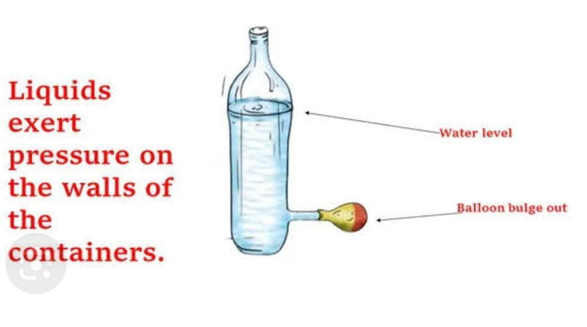
8. Formation of a Cyclone
Question 8. Explain how a storm becomes a cyclone.
Answer: A storm can develop into a cyclone through the following process:
- The Sun heats the ocean water, causing warm and moist air to rise.
- As warm air rises, a low-pressure area is created near the ocean surface.
- Air from surrounding high-pressure areas moves towards this low-pressure area.
- The rising moist air cools and forms clouds.
- The Earth's rotation causes the moving air to rotate around the low-pressure centre.
- The system becomes stronger and develops into a cyclone.
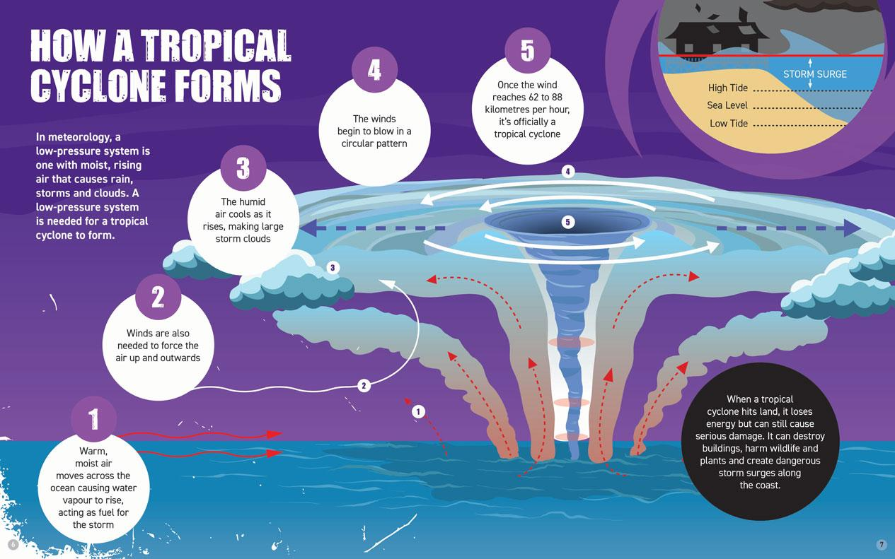
9. Sea Breeze and Land Breeze
Question 9. Fig. 6.25 shows trees along the sea coast in a summer afternoon. Identify which side is land – A or B. Explain your answer.
Answer: Side A is the land.
Explanation:
- During summer afternoons, land becomes hotter faster than the sea.
- The air above the land becomes warm and rises.
- Cool air from the sea moves towards the land to take its place.
- This movement of air is called a sea breeze.
In the figure, the trees bend towards side A due to the wind blowing from side B towards side A.
Therefore, side A represents the land and side B represents the sea.
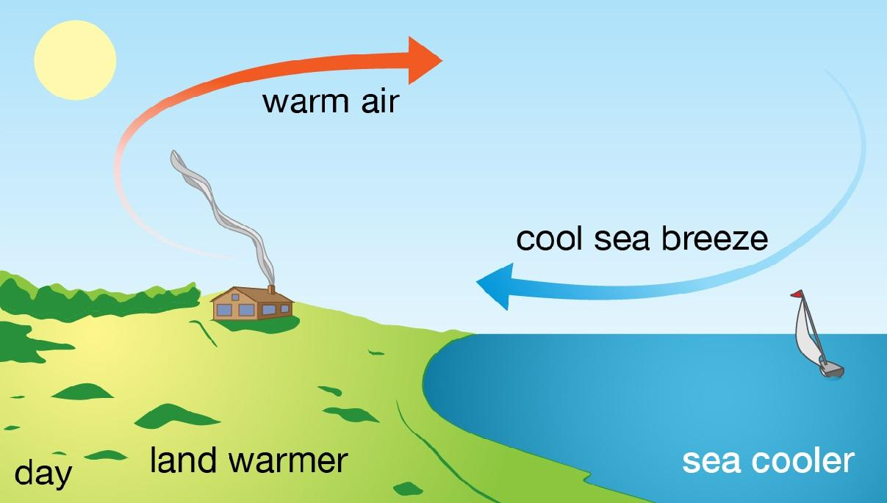
10. Activity to Demonstrate Air Pressure
Question 10. Describe an activity to show that air flows from a region of high pressure to a region of low pressure.
Answer: Activity using two balloons.
Materials Required:
- Two balloons
- A plastic tube
- A connector or valve
Procedure:
- Inflate one balloon fully.
- Inflate the second balloon only a little.
- Connect both balloons using a plastic tube.
- Open the connection between them.
Observation:
Air flows from the fully inflated balloon to the less inflated balloon.
Conclusion:
The fully inflated balloon has higher air pressure than the less inflated balloon. Therefore, air flows from higher pressure to lower pressure.
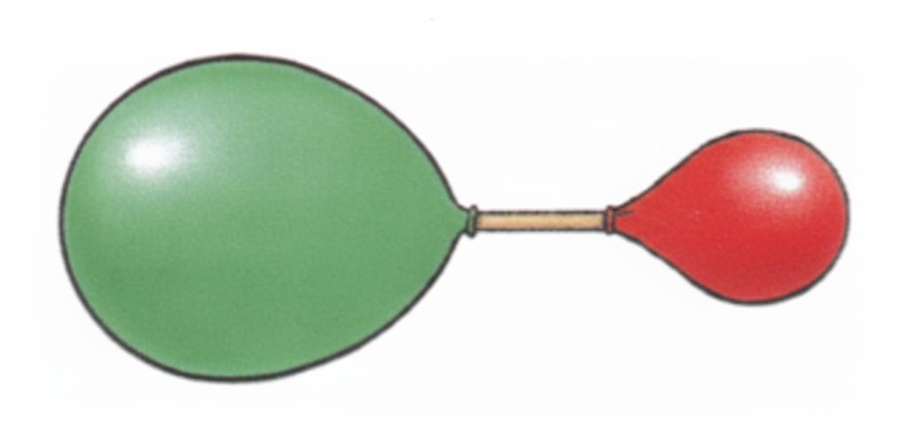
11. Formation of a Thunderstorm
Question 11. What is a thunderstorm? Explain the process of its formation.
Answer: A thunderstorm is a storm accompanied by lightning, thunder, strong winds and heavy rainfall.
Formation of a Thunderstorm:
- The Sun heats the Earth's surface.
- Warm and moist air rises rapidly into the atmosphere.
- As the air rises, it cools and water vapour condenses to form large clouds.
- These clouds grow vertically and become large cumulonimbus clouds.
- Strong upward and downward air movements develop inside the clouds.
- Electric charges separate within the clouds, which can produce lightning and thunder.
- Heavy rain and strong winds may occur.
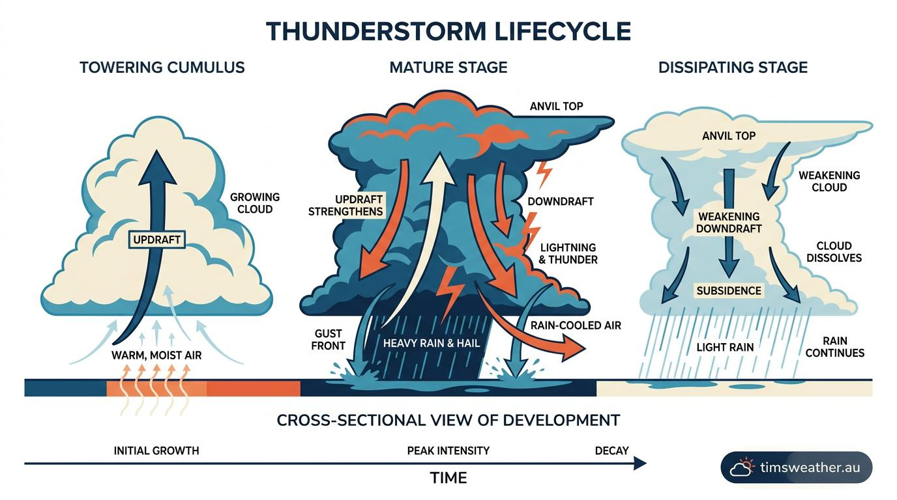
12. Formation of Lightning
Question 12. Explain the process that causes lightning.
Answer: Lightning is a sudden electric discharge that occurs between clouds or between a cloud and the ground.
Process of Lightning:
- During a thunderstorm, water droplets and ice particles move and collide inside clouds.
- These collisions cause electric charges to separate.
- Positive and negative charges collect in different regions of the cloud.
- Sometimes a large potential difference develops between a cloud and the ground.
- When the potential difference becomes very large, electricity suddenly passes through the air.
- This bright electric discharge is called lightning.
The air around the lightning becomes extremely hot and expands rapidly. This produces the sound called thunder.
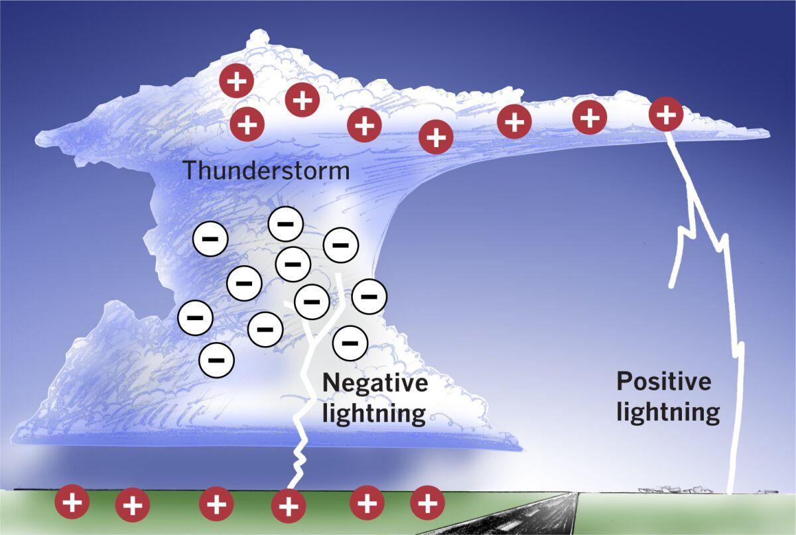
13. Holes in Banners and Hoardings
Question 13. Explain why holes are made in banners and hoardings.
Answer: Holes are made in banners and hoardings to allow air to pass through them.
Explanation:
- Strong winds exert pressure on banners and hoardings.
- Without holes, wind can push against a large surface area.
- This may tear the banner or damage the hoarding.
- Small holes allow air to pass through and reduce the force exerted by the wind.
Conclusion: Holes help prevent banners and hoardings from tearing or falling during strong winds.
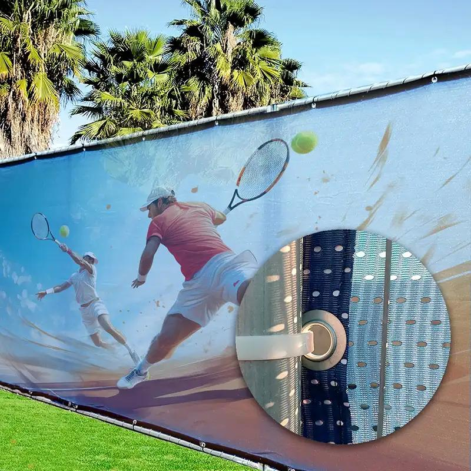
14. Important Terms to Remember
| Term | Simple Meaning |
|---|---|
| Pressure | Force acting per unit area. |
| Atmospheric Pressure | Pressure exerted by the air around us. |
| Liquid Pressure | Pressure exerted by a liquid. |
| Communicating Vessels | Connected vessels in which the same liquid reaches the same level under similar conditions. |
| Buoyant Force | Upward force exerted by a liquid on an object. |
| Cyclone | A powerful rotating storm around a low-pressure centre. |
| Thunderstorm | A storm with lightning, thunder, rain and strong winds. |
| Lightning | A sudden electric discharge. |
| Thunder | Sound produced due to the rapid expansion of heated air around lightning. |
| Sea Breeze | Cool air moving from the sea towards the land during the day. |
15. Quick Revision – Answer Key
| Question | Correct Answer |
|---|---|
| Q1 (i) | (d) Equal in all three vessels. |
| Q1 (ii) | (c) M sticks but N does not. |
| Q1 (iii) | (a) Increase the height of the tank. |
| Q1 (iv) | (b) Equal pressure, greater force in B. |
| Q2 (i) | True. |
| Q2 (ii) | False. |
| Q2 (iii) | False. |
| Q2 (iv) | True. |
| Q3 | Boy sinks more while standing. |
| Q4 | 20,000 Pa. |
| Q5 | Boat B, by 100 Pa. |
| Q6 | Charges would not accumulate easily. |
| Q7 | Both balloons bulge equally. |
| Q8 | Warm moist air rises and forms a rotating low-pressure system. |
| Q9 | Side A is land. |
| Q10 | Air flows from high pressure to low pressure. |
| Q11 | Formation of a thunderstorm. |
| Q12 | Sudden electric discharge. |
| Q13 | Holes allow air to pass through and reduce wind pressure. |
16. Chapter Summary
Pressure is the force acting per unit area. Solids, liquids and gases exert pressure. Liquid pressure increases with depth and acts in all directions. Air moves from regions of higher pressure to regions of lower pressure.
Cyclones and thunderstorms are caused by changes in atmospheric conditions. Lightning is an electric discharge that occurs due to the separation of electric charges. Holes in banners and hoardings allow air to pass through and reduce the effect of strong winds.
Message of the Chapter
Understanding pressure, air movement and weather helps us explain many natural events and stay safe during storms and cyclones.
MCQ Quiz
अध्याय के वस्तुनिष्ठ प्रश्नों का अभ्यास करें।
MCQ Quiz शुरू करेंPDF Notes
इस अध्याय के नोट्स PDF में पढ़ें या डाउनलोड करें।
📄 View PDF ⬇️ Download PDF